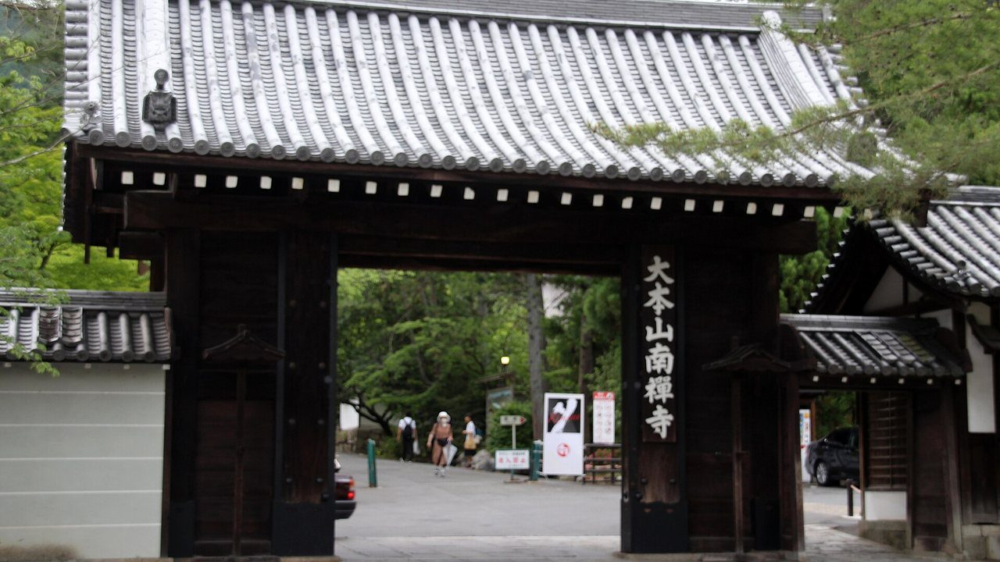

Race, Kyoto Hanami

Behind
Best +0:01
371W
Target 418 W-47 W
- Cadence
- 87rpm
- Heart
- 140bpm
- Speed
- 26.5km/h
Warm-up1 of 11
2:48
Next: · 1:00 at level 16
-0.8%
0 m climbed
0.08 km
12
Resistance / 32
Solo races your best-time ghost: position reads Ahead or Behind, and solo alone gets a Pause button. Frozen at 0:12.